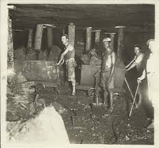
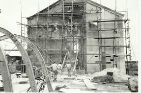
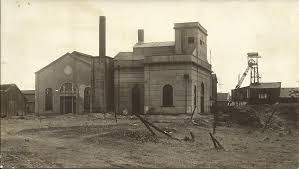
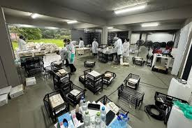
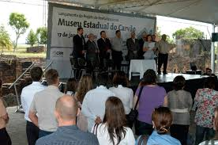

O Início da Mineração
A história da exploração de carvão no Rio Grande do Sul remonta ao século XIX, com as primeiras descobertas na região de Arroio dos Ratos e São Jerônimo. A Bacia Carbonífera do Baixo Jacuí logo se tornou um polo estratégico para o desenvolvimento energético do Brasil, atraindo investimentos e impulsionando o crescimento local.

Empresas pioneiras, como a Companhia Estrada de Ferro e Minas de São Jerônymo, estabeleceram as bases para uma indústria que marcaria profundamente a paisagem econômica e social da região por mais de um século.
A Era da Usina Termelétrica
No auge da exploração carbonífera, em meados do século XX, foi construída a Usina Termelétrica de Charqueadas. Operada pela então Comissão Estadual de Energia Elétrica (CEEE), a usina representou um marco tecnológico e industrial, utilizando o carvão extraído localmente para gerar energia essencial ao desenvolvimento do estado.

Suas instalações imponentes e sua capacidade produtiva foram símbolos do progresso e da força da indústria carbonífera gaúcha durante décadas, moldando a vida de milhares de trabalhadores e suas famílias.
A Criação do Museu
Com a progressiva desativação das atividades da usina nas décadas seguintes, surgiu a consciência da necessidade de preservar esse importante legado industrial. Mobilizações da comunidade e o reconhecimento do valor histórico e cultural do local levaram à criação do Museu Estadual do Carvão, vinculado à Secretaria de Estado da Cultura (Sedac).

Fundado oficialmente em 1986, o museu estabeleceu-se nas próprias instalações da antiga usina, tornando-se pioneiro na preservação do patrimônio industrial da mineração de carvão no Brasil e na América Latina.
O Acervo Documental
O coração do Museu Estadual do Carvão reside em seu vasto e inestimável acervo arquivístico. Composto por centenas de milhares de documentos, fotografias, mapas, plantas, livros e outros registros, ele salvaguarda a memória detalhada das principais companhias carboníferas que atuaram na região.

Este acervo monumental é uma fonte primária indispensável para pesquisadores, historiadores e todos que desejam compreender a fundo a história econômica, social e tecnológica da era do carvão no sul do Brasil.
O Museu Hoje
Atualmente, o Museu Estadual do Carvão continua sua missão de preservar e difundir a história da mineração. Além de guardar e disponibilizar seu rico acervo para consulta, o museu oferece exposições permanentes e temporárias que retratam a vida dos mineiros, a tecnologia da época e o impacto da indústria na sociedade.

Realiza atividades educativas, promove eventos culturais e se consolida como um centro de referência para estudos sobre patrimônio industrial. Mesmo diante de desafios, como a recente recuperação de parte do acervo após a enchente, o museu reafirma seu compromisso com a memória e a pesquisa, convidando a todos para uma viagem fascinante pela história do carvão.
Explore as outras seções do site para conhecer nossos fundos documentais, projetos em andamento e publicações relacionadas.